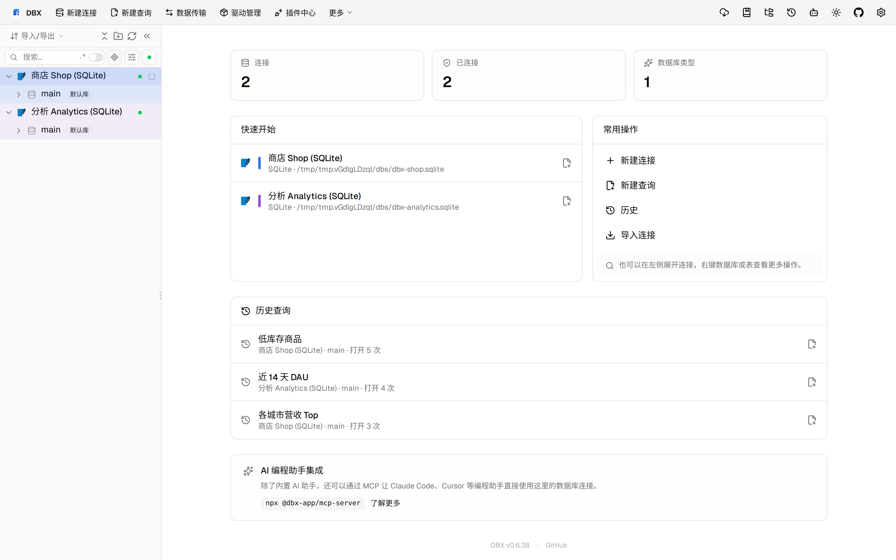
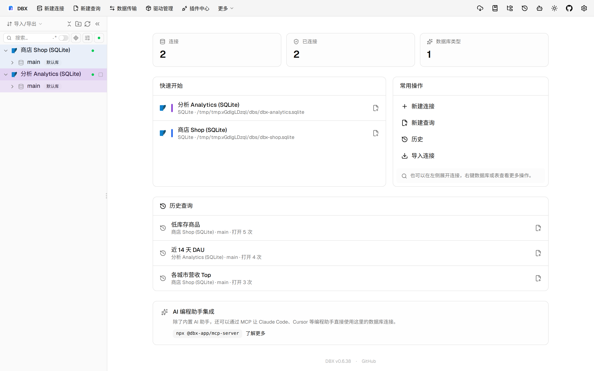
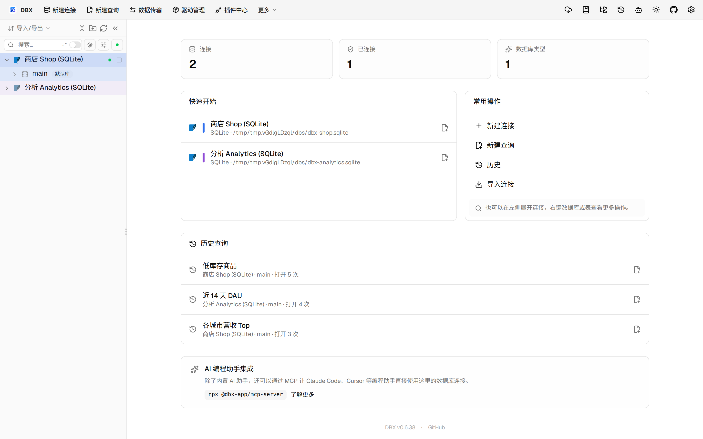

#11549 界面预览
commit d803006 · 回到 PR · 这个 PR 在 Oracle / OceanBase Oracle 的表结构编辑里新增了三类约束编辑器：主键、外键和 CHECK。它们都支持先预览 DDL，再执行并读回实际状态，执行结果里会显示部分成功、恢复 SQL 和实际约束状态；同时 OceanBase 版会隐藏 Oracle 专属的延迟选项和主键旧索引处理。
⚠️ 这次录制有 17 步没能按计划执行；带 ⚠️ 的截图拍摄于步骤失败之后，画面未必是说明文字所描述的状态。
红线是鼠标走过的轨迹，红色圆环是一次点击；底部文字是这一步在做什么。多个场景各自从应用初始状态开始。空格暂停，← → 逐段查看。
 ⚠️ Oracle 约束编辑器入口 · 查看订单表的结构页，定位约束编辑区
⚠️ Oracle 约束编辑器入口 · 查看订单表的结构页，定位约束编辑区

⚠️ Oracle 约束编辑器入口 · 展示外键编辑器里的列对顺序、引用表和 Oracle 专属选项

⚠️ CHECK 约束编辑与预览 · 展示 CHECK 约束编辑器入口
 ⚠️ CHECK 约束编辑与预览 · 查看 CHECK 约束的 DDL 预览、影响对象和恢复 SQL
⚠️ CHECK 约束编辑与预览 · 查看 CHECK 约束的 DDL 预览、影响对象和恢复 SQL
 ⚠️ 外键与主键编辑结果 · 展示外键编辑器里的列对顺序、引用表和 Oracle 专属选项
⚠️ 外键与主键编辑结果 · 展示外键编辑器里的列对顺序、引用表和 Oracle 专属选项

⚠️ 外键与主键编辑结果 · 展示主键编辑器里的列顺序、预览和恢复信息